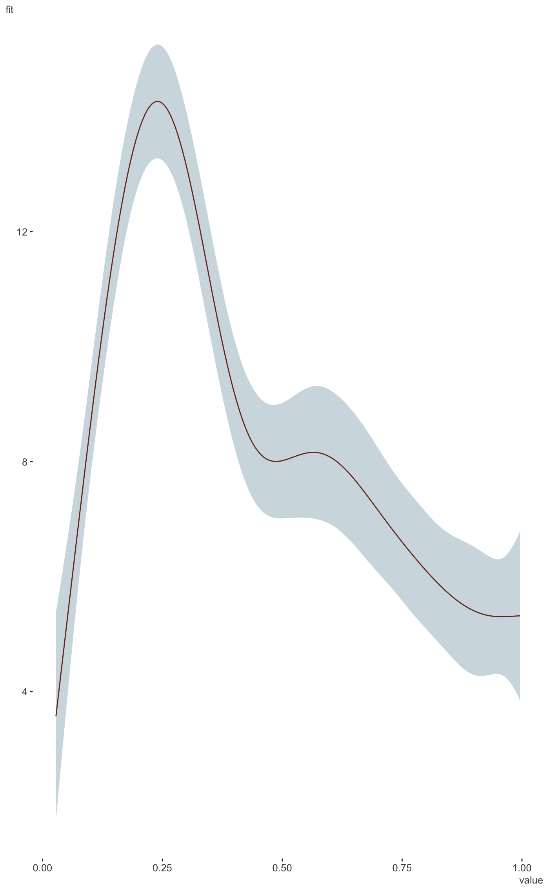
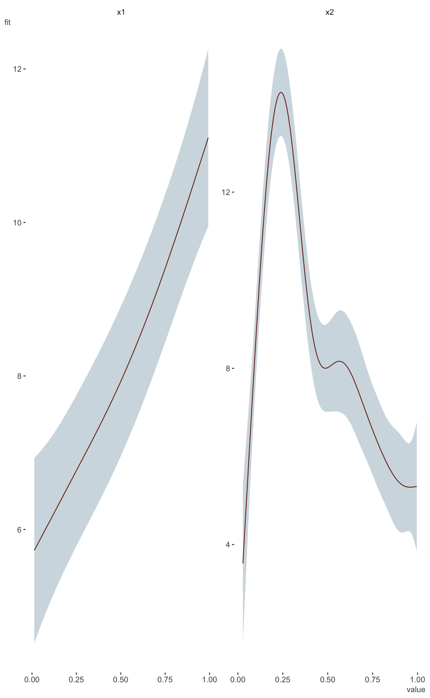

Plot 1d marginal effects from mgcv GAM model results.
plot_gam( model, main_var, conditional_data = NULL, line_color = "#7B321C", ribbon_color = "#28688640", ncol = NULL, nrow = NULL ) plot_gam_1d( model, main_var, conditional_data = NULL, line_color = "#ff5500", ribbon_color = "#00aaff" ) plot_gam_multi1d( model, main_var, conditional_data = NULL, line_color = "#ff5500", ribbon_color = "#00aaff", ncol = ncol, nrow = nrow )
| model | The mgcv GAM. |
|---|---|
| main_var | Which variable do you want to plot? Uses bare variable names
and can take multiple variables via |
| conditional_data | This is the same as the newdata argument for predict. Supply a data frame with desired values of the model covariates. |
| line_color | The color of the fitted line. |
| ribbon_color | The color of the uncertainty interval around the line. |
| ncol | If plotting multiple smooths, these are passed to facet_wrap. |
| nrow | If plotting multiple smooths, these are passed to facet_wrap. |
a ggplot2 object of the effects of main_var.
This function is fairly 'no-frills' at the moment. Only 1d or multiple 1d smooths of numeric variables are able to be plotted. If conditional data is not supplied, it will be created by create_prediction_data, which defaults to means for numeric, most common category for categorical variables, and 500 observations. It currently will fail if you have a mix of 2d and 1d and do not specify a smooth.
Other model visualization:
plot_coefficients.brmsfit(),
plot_coefficients.lm(),
plot_coefficients.merMod(),
plot_coefficients(),
plot_gam_2d(),
plot_gam_3d(),
plot_gam_check()
#>#> #>#> #> #>#>#> #>#> #> #>#> #> #>#> #> #># example taken from the mgcv plot.gam help file. set.seed(0) ## fake some data... f1 <- function(x) { exp(2 * x) } f2 <- function(x) { 0.2 * x ^ 11 * (10 * (1 - x)) ^ 6 + 10 * (10 * x) ^ 3 * (1 - x) ^ 10 } f3 <- function(x) { x * 0 } n <- 200 sig2 <- 4 d = tibble( x0 = rep(1:4, 50), x1 = runif(n, 0, 1), x2 = runif(n, 0, 1), x3 = runif(n, 0, 1), e = rnorm(n, 0, sqrt(sig2)), y = 2 * x0 + f1(x1) + f2(x2) + f3(x3) + e ) %>% mutate(x0 = factor(x0)) b <- gam(y ~ x0 + s(x1) + s(x2) + s(x3), data = d) library(visibly) plot_gam(b, conditional_data = tibble(x2 = runif(500)), main_var = x2)plot_gam(b, main_var = x2)